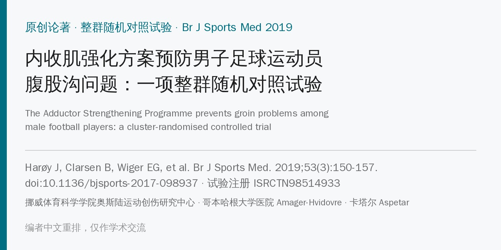
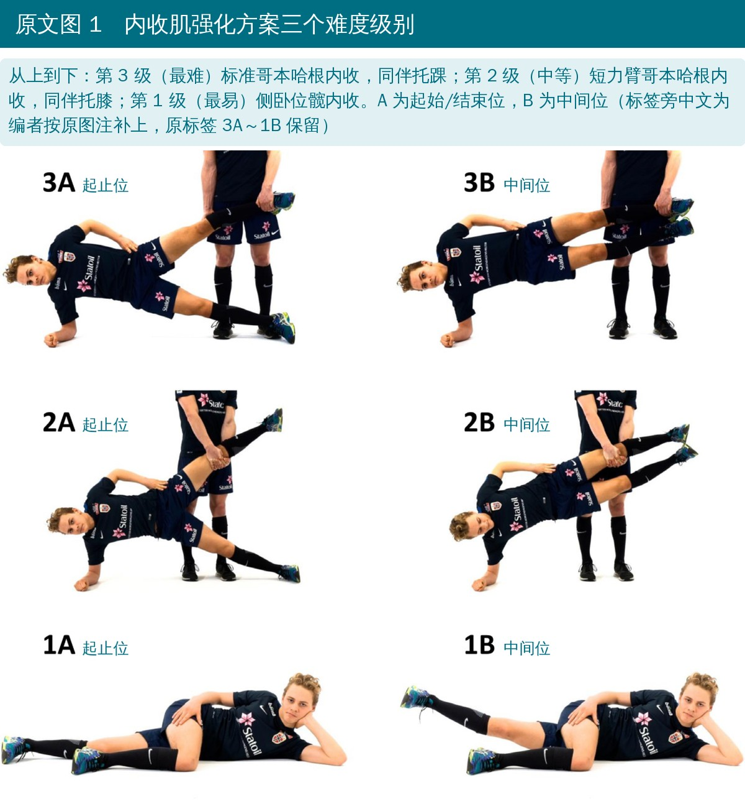
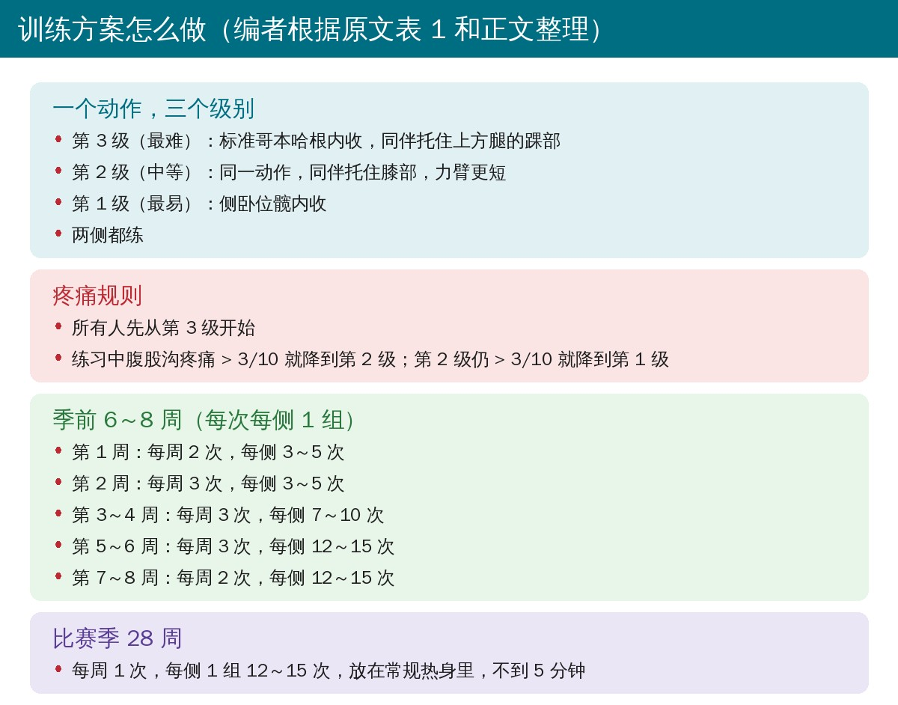
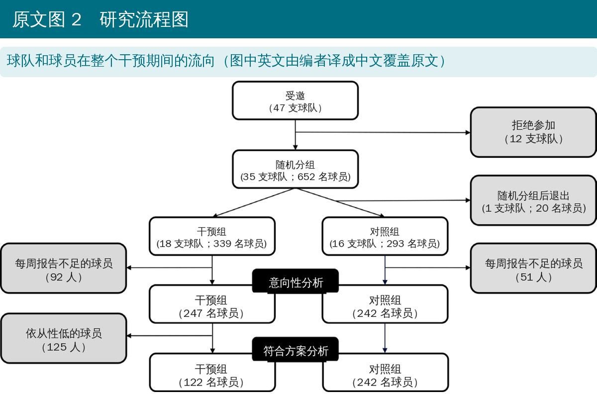
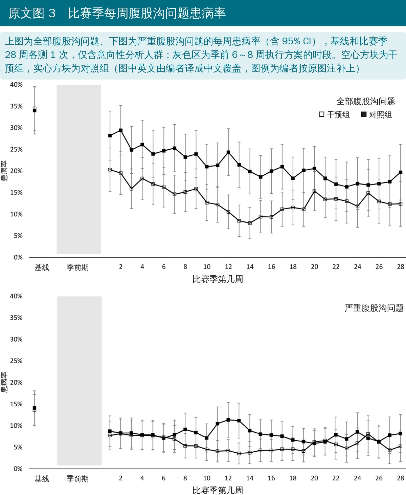
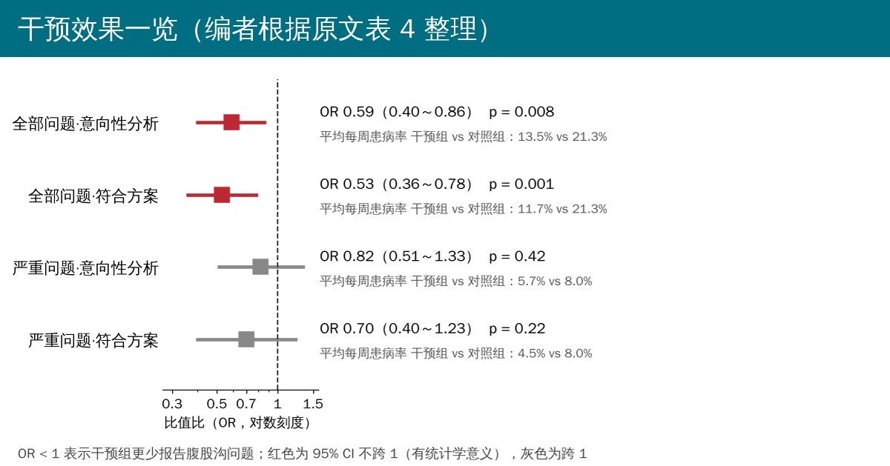
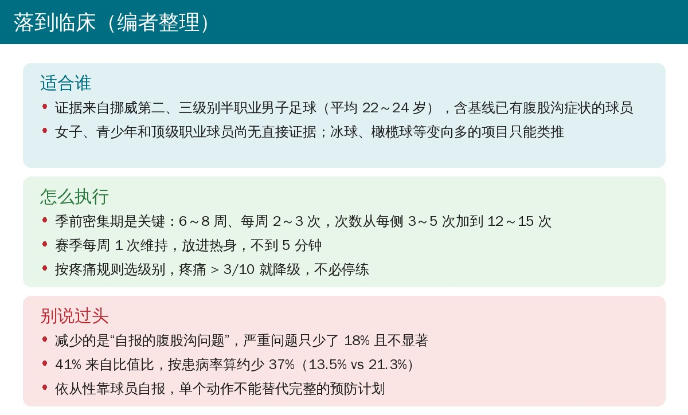

🔖原文信息（编者中文重排）
📚 文献信息
▪ Harøy J, Clarsen B, Wiger EG, Øyen MG, Serner A, Thorborg K, Hölmich P, Andersen TE, Bahr R. The Adductor Strengthening Programme prevents groin problems among male football players: a cluster-randomised controlled trial. Br J Sports Med. 2019;53(3):150-157. doi:10.1136/bjsports-2017-098937
▪ 中文题目：内收肌强化方案预防男子足球运动员腹股沟问题：一项整群随机对照试验
▪ 作者来自挪威体育科学学院奥斯陆运动创伤研究中心（OSTRC）、丹麦哥本哈根大学医院 Amager-Hvidovre 运动骨科研究中心、卡塔尔 Aspetar 骨科与运动医学医院
▪ 研究类型：整群随机对照试验（以球队为单位随机），试验注册号 ISRCTN98514933
• 男子足球中腹股沟损伤占所有缺勤损伤的 4%～19%；精英级别每个赛季约五分之一的球员会因腹股沟损伤缺训缺赛
• 以往的腹股沟专项预防项目都没有显著降低损伤率；FIFA 11+ 可能有效，但证据只来自两项研究，且结果不一致
• 以往研究按“缺勤损伤”统计，但只有约三分之一的腹股沟问题会导致缺勤，很多球员是带着疼痛、训练量减少或表现下降继续踢
• 足球中三分之二的腹股沟损伤与内收肌有关；髋内收力量低是公认的可干预危险因素，腹股沟痛的球员离心内收力量常差 20% 以上
• 哥本哈根内收训练（CA）能高度激活长收肌、明显增加离心内收力量，而且不需要器械，在球场上就能做，但它能不能预防损伤还没人验证
• 研究目的：检验一个基于哥本哈根内收训练的单动作方案能否降低男子足球运动员腹股沟问题的患病率
• 对象：2016 年挪威第二、三级别（半职业）男子足球队，合同球员都可参加，季前 6～8 周预计不能训练比赛的除外；基线有腹股沟症状的球员不排除
• 随机：以球队为单位整群随机，统计师用计算机做区组随机（区组 4 和 6 随机交替），密封信封分配
• 盲法：球员、教练和主要研究者无法设盲；数据由一名设盲的研究助理管理，收集结束前各方都看不到结局数据
• 干预组：内收肌强化方案，一个动作三个级别（侧卧髋内收、短力臂哥本哈根、长力臂哥本哈根），先从第 3 级开始，疼痛 > 3/10 就降级；季前 6～8 周每周 2～3 次逐步加量，比赛季每周 1 次，放在热身里做
• 对照组：照常训练
• 主要结局：比赛季 28 周中每周全部腹股沟问题的患病率，用 OSTRC 过劳损伤问卷经手机 App 每周收集；只要有疼痛、酸胀、僵硬、弹响等症状，或训练参与、训练量、表现因腹股沟下降，就算一例
• 次要结局：每周严重腹股沟问题的患病率（训练量或表现中度以上下降，或完全不能参加）
• 统计：广义估计方程（GEE），主分析为意向性分析，另做符合方案分析（季前完成 < 67% 或赛季完成 < 50% 的剔除）；样本量按 40% 的患病率下降估算，每组需 380 人（19 支队）
• 回复率不足 75%（少于 21 次周报）的球员不进入分析，缺失数据用多重插补；赛季最后一个月对缺报周做了回顾性补报，这两点都偏离了注册方案

🔖原文图 1（照片为原图，级别和位置由编者补成中文）

🔖编者根据原文表 1 和正文整理
• 入组：47 支受邀球队中 35 支（652 人）随机，干预组 18 队 339 人，对照组 17 队 313 人；对照组 1 支队（20 人）随机后退出
• 进入意向性分析：干预组 247 人、对照组 242 人；两组每周训练时长、比赛分钟和场次都无差异
• 基线：两组腹股沟问题患病率都约 33%，严重问题约 13%；但干预组更年轻（22.0 vs 23.7 岁）、体重更轻、成年队年限更短
• 主要结局：比赛季平均每周腹股沟问题患病率干预组 13.5%（95% CI 12.3%～14.7%），对照组 21.3%（20.0%～22.6%）；GEE 显示干预组报告腹股沟问题的风险低 41%（OR 0.59，95% CI 0.40～0.86，P = 0.008）
• 次要结局：严重腹股沟问题患病率 5.7% vs 8.0%，风险低 18%，无统计学意义（OR 0.82，95% CI 0.51～1.33，P = 0.42）
• 符合方案分析：全部问题患病率降到 11.7%，OR 0.53（P = 0.001）；严重问题 4.5%，OR 0.70，仍不显著
• 累计发生率：整个赛季至少报告过一次腹股沟问题的，干预组 55%、对照组 67%；严重问题 28% vs 37%
• 依从性：季前平均完成推荐量的 73%，比赛季平均每周 0.7 次（约 70%）；没有收到与训练相关的不良事件报告

🔖原文图 2（编者把图中英文译成中文）

🔖原文图 3（编者把图中英文译成中文）

🔖编者根据原文表 4 整理
• 这是第一个证明有效的腹股沟专项运动预防方案；以往方案同时练内收肌、腹肌和屈髋肌，本方案只针对内收肌
• 季前密集期被认为是关键：先在季前把力量练上去，再在赛季统计损伤；以往研究是一边上方案一边统计
• 依从性高可能是有效的另一原因：约 70%，远高于很多预防研究；符合方案分析效果更大，也提示依从性越好效果越好
• 单动作省时间，赛季每周一次不到 5 分钟；但它只针对四类腹股沟痛中的内收肌相关一类，不过这一类占足球髋腹股沟损伤的三分之二以上
• 每次每侧只做 1 组，力量增幅可能只在既往研究 8%～36% 的低端；也没记录每人用的是哪一级，剂量和效果的关系还不清楚
• 作者建议把这三级动作像北欧腘绳肌训练一样加进 FIFA 11+，专门针对内收肌
• 设计扎实：以球队为单位整群随机，避免同队球员互相“传染”；35 支队、近 500 人进入分析，规模在同类研究中不小
• 结局更敏感：用 OSTRC 问卷统计所有腹股沟问题，不只看缺勤，能抓到“带伤坚持”的部分，比缺勤定义更有统计效能
• 结局是自报的，且球员知道分组：干预组球员知道自己在做预防训练，可能更少报告轻微不适；主要结局恰恰是包括轻症在内的全部问题，而更客观的严重问题差异不显著
• 两处偏离注册方案：剔除回复率 < 75% 的球员（约四分之一）以及回顾性补报（意向性分析数据中占 21%）；作者说剔除是在分析前决定的
• 剔除并不均衡：干预组剔除 92 人（27%），对照组 51 人（17%），干预组的周回复率也更低（74% vs 80%），被剔除者基线 HAGOS 分数更差
• 样本量没达到计划：原计划每组 380 人，实际进入分析的约 245 人；主要结局仍显著，但严重问题可能检验效能不足
• 缺少诊断：只知道是“腹股沟问题”，不知道是内收肌、髂腰肌还是耻骨相关，只有 26 名球员接受了标准化检查
• “风险低 41%”其实是比值比：41% 来自 OR 0.59；按患病率直接算，13.5% ÷ 21.3% ≈ 0.63，即约低 37%。结局并不罕见（对照组 21%），OR 会夸大相对差异
• 次要结局的数字有一处差 0.1：表 4 严重问题符合方案分析的平均差为 3.4 个百分点，但正文 8.0% − 4.5% = 3.5，可能是四舍五入
• 对照组队数：摘要写对照组 17 队 313 人，图 2 写 16 队 293 人，差的正是随机后退出的 1 队 20 人，两者都没错，但摘要没提退出
• 腹股沟问题总次数：正文说 13 628 份周报中 2458 份报告了腹股沟问题，表 5 两组合计 844 + 1321 = 2165 份；差额应来自未进入意向性分析的球员，原文没说明
• 干预组缺勤比例反而更高：表 5 中导致缺勤的腹股沟问题占比干预组 41%、对照组 33%，作者没有讨论
• 基线差异没交代是否校正：两组年龄、体重和成年队年限有显著差异，表 4 注释只说严重问题模型纳入了这些协变量，全部问题的主分析是否校正没有说明
• 结论里的“损伤”：讨论称方案能降低“腹股沟损伤”风险，但研究测的是自报的“腹股沟问题”，包括没有缺勤的轻度症状

🔖编者整理
• 季前是窗口期：赛季前 6～8 周按表 1 逐步加量，每次每侧 1 组，从 3～5 次加到 12～15 次
• 赛季维持：每周一次、每侧 12～15 次，放进热身，几分钟就能做完，不需要任何器械
• 级别靠疼痛选：默认第 3 级（同伴托踝），疼痛 > 3/10 降到第 2 级（同伴托膝），仍痛就做第 1 级侧卧内收；有腹股沟症状的球员也能参加
• 和球员沟通时说准确：可以说“全部腹股沟问题的周患病率从约 21% 降到约 14%”，严重问题的减少还不确定
• 不是全部：它针对内收肌相关的腹股沟痛；髂腰肌、腹股沟管和耻骨相关问题，以及女子和青少年球员，还需要其他证据
表 1 内收肌强化方案训练计划
| 周次 | 每周次数 | 每侧组数 | 每侧重复次数 |
|---|---|---|---|
| 季前第 1 周 | 2 | 1 | 3～5 |
| 季前第 2 周 | 3 | 1 | 3～5 |
| 季前第 3～4 周 | 3 | 1 | 7～10 |
| 季前第 5～6 周 | 3 | 1 | 12～15 |
| 季前第 7～8 周 | 2 | 1 | 12～15 |
| 比赛季 | 1 | 1 | 12～15 |
表 2 进入意向性分析的球员基线特征
| 项目 | 干预组（n = 247） | 对照组（n = 242） | P 值 |
|---|---|---|---|
| 年龄（岁）* | 22.0（4.3） | 23.7（4.3） | < 0.001 |
| 身高（cm）* | 181.9（6.7） | 182.3（6.4） | 0.45 |
| 体重（kg）* | 75.7（7.5） | 78.0（7.5） | 0.001 |
| 成年队年限（年）* | 5.3（4.1） | 6.2（4.4） | 0.023 |
| 腹股沟问题患病率（%） | 32.8 | 32.6 | > 0.99 |
| 严重腹股沟问题患病率（%） | 12.6 | 13.6 | 0.71 |
| HAGOS†‡ 疼痛 | 95.0（15.0） | 95.0（15.0） | 0.69 |
| HAGOS 症状 | 82.1（25.0） | 82.1（25.0） | 0.70 |
| HAGOS 日常生活活动 | 100（5.0） | 100.0（10.0） | 0.53 |
| HAGOS 运动与娱乐活动 | 90.6（21.9） | 93.8（21.1） | 0.20 |
| HAGOS 参加体育活动 | 100.0（25.0） | 100.0（12.5） | 0.48 |
| HAGOS 生活质量 | 90.0（25.0） | 95.0（25.0） | 0.79 |
| 位置：守门员 / 后卫 / 中场 / 前锋 | 13% / 31% / 36% / 20% | 11% / 30% / 35% / 23% | 0.80 |
| 优势腿：左 / 右 | 17% / 83% | 21% / 79% | 0.24 |
注：* 均值（标准差）；† 干预组 n = 225，对照组 n = 216；‡ 中位数（四分位距）。HAGOS，哥本哈根髋与腹股沟结局评分。
表 3 进入意向性分析球员的平均每周暴露量，均值（标准差）
| 项目 | 干预组（n = 247） | 对照组（n = 242） | P 值 |
|---|---|---|---|
| 足球训练（小时） | 6.0（2.0） | 6.2（2.2） | 0.23 |
| 个人训练（小时） | 3.5（2.4） | 3.6（2.3） | 0.82 |
| 比赛分钟 | 65.7（26.9） | 67.0（25.5） | 0.60 |
| 比赛场次 | 0.8（0.3） | 0.8（0.3） | 0.40 |
表 4 意向性分析和符合方案分析的广义估计方程（GEE）模型
| 结局与分析 | 患病率平均差（%） | OR* | 95% CI | P 值 |
|---|---|---|---|---|
| 全部问题·意向性分析 | 7.8 | 0.59 | 0.40～0.86 | 0.008 |
| 全部问题·符合方案分析 | 9.6 | 0.53 | 0.36～0.78 | 0.001 |
| 严重问题·意向性分析† | 2.3 | 0.82 | 0.51～1.33 | 0.42 |
| 严重问题·符合方案分析‡ | 3.4 | 0.70 | 0.40～1.23 | 0.22 |
注：* 所有分析以干预组为参照；† 模型纳入年龄、成年队年限、身高和体重为协变量；‡ 模型纳入身高为协变量。
表 5 意向性分析球员在比赛季 28 周报告的腹股沟问题特征
| 特征 | 干预组（844 次腹股沟问题） | 对照组（1321 次腹股沟问题） |
|---|---|---|
| 导致缺勤（%） | 41 | 33 |
| 逐渐起病（%） | 78 | 79 |
| 急性起病（%） | 22 | 21 |
| 优势腿（%） | 45 | 44 |
| 非优势腿（%） | 35 | 34 |
| 双腿（%） | 20 | 22 |
欢迎关注骨科康复小黄公众号，获取更多物理治疗的专业知识！
📄参考文献：
Harøy J, Clarsen B, Wiger EG, Øyen MG, Serner A, Thorborg K, Hölmich P, Andersen TE, Bahr R. The Adductor Strengthening Programme prevents groin problems among male football players: a cluster-randomised controlled trial. Br J Sports Med. 2019;53(3):150-157. doi:10.1136/bjsports-2017-098937
本文为中文解读，仅作学术交流：照片引自原文图 1（级别和位置由编者补成中文），原文图 2、3 中的英文由编者译成中文覆盖原位置，训练方案卡、森林图和临床卡为编者根据原文整理，表格为编者翻译。原文 © 2018 Article author(s)，Br J Sports Med 由 BMJ 出版，版权归原作者和出版方所有。